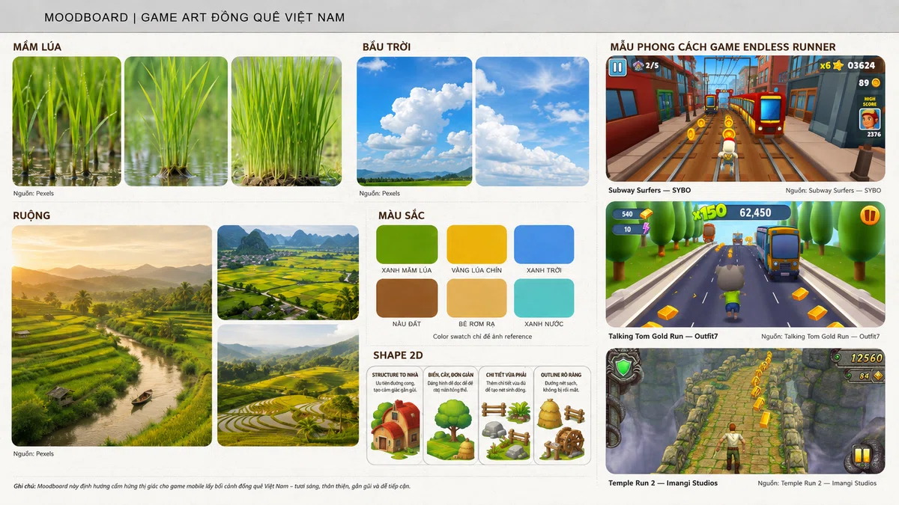
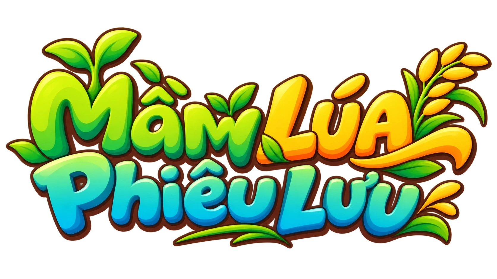
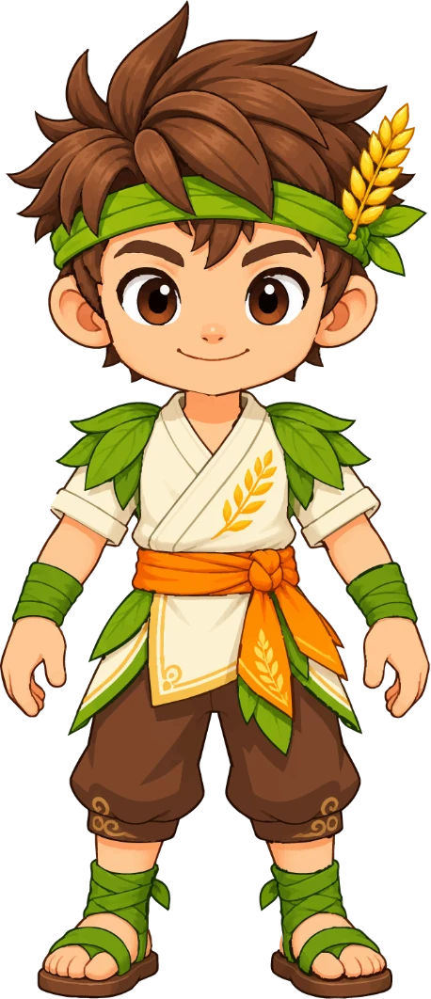
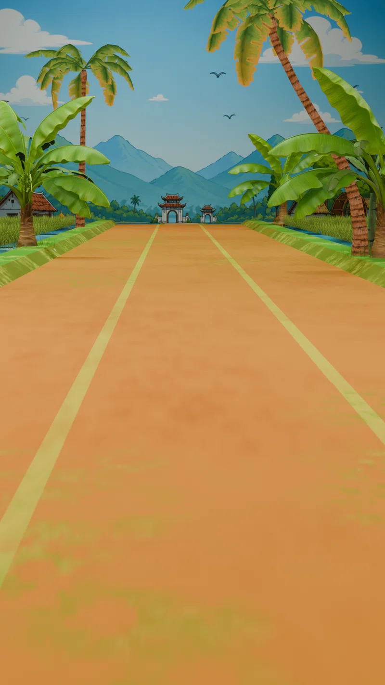
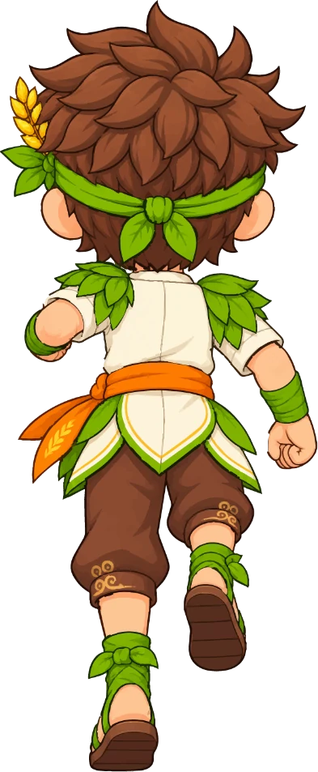
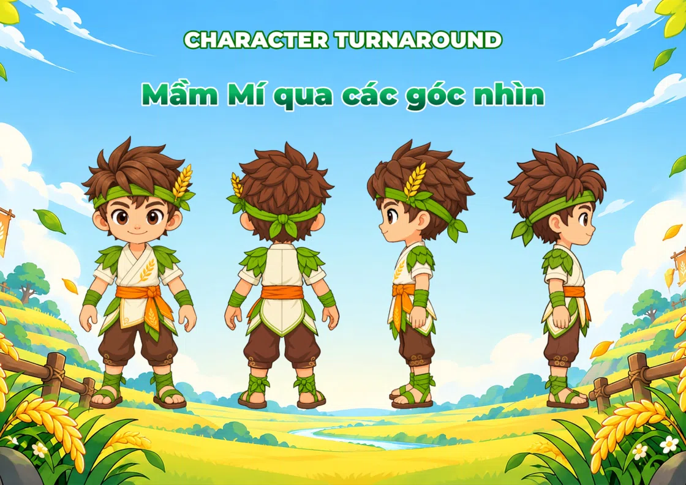
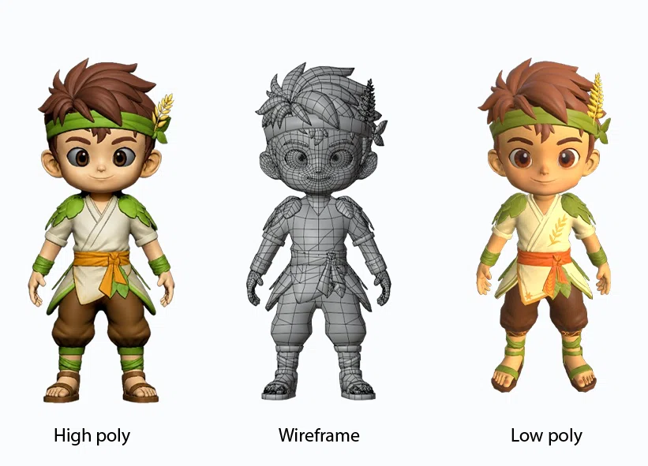
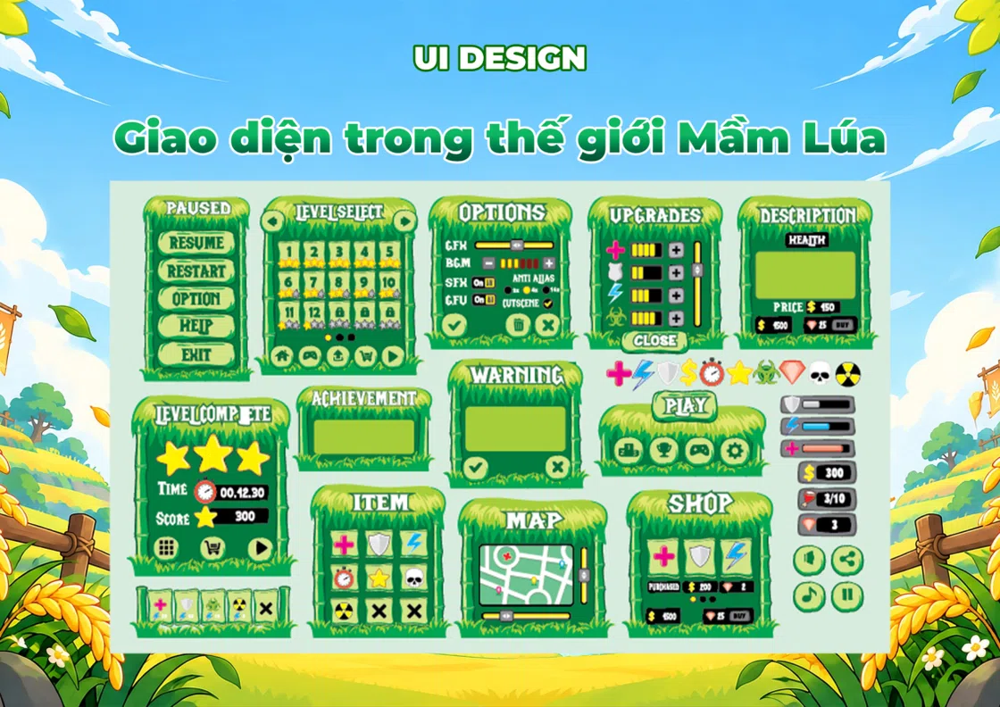

01 / RESEARCHTìm nguồn cảm hứng
Moodboard, chất liệu đồng quê Việt Nam và định hướng hình ảnh.
BƯỚC VÀO THẾ GIỚI

Mầm Lúa Phiêu LưuTừ cánh đồng Việt Nam đến thế giới trò chơi. Khám phá hành trình sáng tạo nhân vật Mầm Mí, chuyển động, cảnh quan và nghệ thuật game 2D & 3D.

Những điều bình dị nhất cũng có thể mở ra một cuộc phiêu lưu kỳ diệu.
“Mầm Lúa Phiêu Lưu” là dự án thiết kế hệ thống mỹ thuật cho game Endless Runner trên thiết bị di động, lấy cảm hứng từ đồng quê Việt Nam, sắc vàng của lúa chín và năng lượng của thiên nhiên.
Dự án kết nối thiết kế nhân vật 2D, mô hình 3D, hoạt ảnh, môi trường và hệ thống giao diện trong một ngôn ngữ hình ảnh tươi sáng, nhất quán.
GẶP NHÂN VẬT CỦA CHÚNG TÔI ↗Mỗi khung cảnh là một lát cắt của đồng quê — con đường đất, ruộng lúa, dòng nước và những hàng cây. Chọn một góc nhìn để khám phá.

Góc nhìn chính diện, đặt tuyến đường chạy làm trục thị giác giữa ruộng đồng.
* Hình ảnh môi trường là tư liệu thiết kế của dự án, không phải màn chơi tương tác hoàn chỉnh.
Với mái tóc nâu bồng bềnh, băng đô xanh, bông lúa vàng và trang phục mang cảm hứng từ đồng quê, Mầm Mí là người bạn đồng hành trong mỗi chặng đường.
Từ chạy, chuyển làn đến bật nhảy, mỗi tư thế được phát triển để tạo nên nhịp điệu chuyển động cho thế giới Mầm Lúa.

Nhân vật tự chạy liên tục trên đường đồng quê. Chuyển trái, chuyển phải để đổi làn; nhảy để vượt chướng ngại. Sau mỗi động tác, Mầm Mí tiếp tục chạy ngay tại làn đang đứng.
BÀN PHÍM: ← ↑ → · HOẶC VUỐT TRÊN ĐƯỜNG CHẠY
Toàn bộ hành trình thiết kế từ concept đến tài nguyên hoàn thiện.
Không chỉ là những hình ảnh hoàn chỉnh, Mầm Lúa Phiêu Lưu là quá trình nghiên cứu, thử nghiệm và thống nhất một phong cách thiết kế xuyên suốt.

01 / RESEARCHMoodboard, chất liệu đồng quê Việt Nam và định hướng hình ảnh.

02 / DESIGNPhác thảo silhouette, tạo hình nhân vật và model sheet.

03 / MODELINGHigh poly, low poly, topology, UV và thử nghiệm hoạt ảnh.

04 / SYSTEMĐồng bộ màu sắc, tài nguyên trò chơi và giao diện UI.
“Mầm Lúa Phiêu Lưu” — nơi những hình ảnh thân thuộc của đồng quê trở thành một cuộc phiêu lưu đầy sắc màu.
TRỞ VỀ ĐIỂM KHỞI ĐẦU ↗